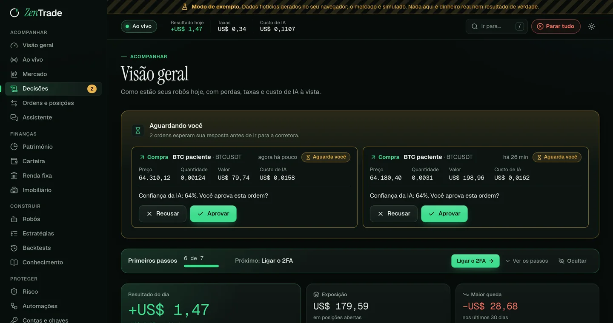
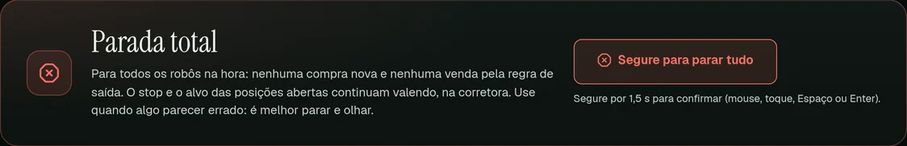

O stop fica na corretora
A proteção fica na própria Binance. Se o computador desligar, o stop continua ativo.
Robôs com regras claras, uma IA que avalia três cenários e um motor de risco com a palavra final. Para cripto, mini índice, renda fixa e imóveis.
Código aberto · AGPL-3.0 · roda na sua máquina com Docker
Visão geral no modo de exemplo do próprio app: a tela é real, os números são fictícios.

A regra encontra o sinal, a IA avalia e o motor de risco decide. Se uma das camadas recusar, a ordem não sai, e o motivo fica registrado.
Estratégias montadas em blocos: rompimentos, médias, ATR, VWAP, faixa de abertura e janela de horário. Cada sinal vem com a explicação em português.
Alta, lateral e baixa, cada um com probabilidade, gatilho e ponto de invalidação. O código calcula o valor esperado já com as taxas, e a IA escreve o principal argumento contra a própria proposta.
Confere perda do dia, exposição, frequência e pausa após perda, calcula o tamanho da posição e coloca o stop na própria corretora. A IA pode pedir uma posição menor, nunca maior.
Cada decisão do Claude é avaliada depois. Se aprovou, a operação deu lucro? Se vetou, a operação teria dado prejuízo?
Exemplo ilustrativo. Regra real: só opera com valor esperado positivo depois das taxas e cenário favorável de pelo menos 60%.
Robôs em teste, outubro de 2026.
Antes de usar dinheiro de verdade, a estratégia enfrenta custos reais e dados que ela nunca viu. Se só funciona no passado, o ZenTrade avisa.
Donchian 20/10 com filtro de tendência, 15 moedas, velas de 4 horas, 2021 a 2026, entrada na abertura seguinte.
| passou | Lucro em 13 de 15 moedas, Sharpe 1,47, maior queda de 3,9% | Ganhos estáveis e quedas pequenas. |
|---|---|---|
| atenção | Fora da amostra: 8 de 15 positivas | A vantagem pode estar diminuindo e segue em observação. |
| contra | Comprar e segurar rendeu mais no período | Com quedas de 70% a 90% no caminho. O relatório mostra os dois lados. |
O ZenTrade lê os arquivos oficiais da B3 com todos os negócios do pregão e monta as próprias velas. Basta arrastar os arquivos na tela. Com o MetaTrader 5 da sua corretora, ele busca anos de histórico e atualiza todo dia.
Use as setas para percorrer as velas.
O ZenTrade consolida tudo em reais, com câmbio atualizado, e o assistente responde sobre qualquer parte.
R$ 370.602,93
| Carteira cripto Saldo por moeda direto da corretora, bruto e líquido de taxas. | 9.992,56 | 2,7% |
|---|---|---|
| Renda fixa CDB, Tesouro, LCI, LCA e poupança pelo Open Finance, com CDI e IPCA oficiais. | 48.210,37 | 13,0% |
| Imobiliário Imóvel, temporada, flip, terreno, FIIs, REITs, crowdfunding e consórcio, com simulador. | 312.400,00 | 84,3% |
Números do modo de exemplo do app. Nenhuma conta real foi lida.
A proteção fica na própria Binance. Se o computador desligar, o stop continua ativo.

Um botão bloqueia novas entradas de todos os robôs na hora, sem cancelar os stops de proteção.
Não. Ninguém pode garantir lucro. O ZenTrade oferece método: estratégias testadas com custos reais, decisões explicadas e medidas, e um motor de risco que limita as perdas de cada dia.
Você pode usar a sua conta do Claude ou uma chave de API, com teto de gasto. Os robôs também funcionam só com as regras e o motor de risco.
Só quando você ativa, com dois fatores e reautenticação. Antes disso há três modos de treino: observar, papel (preço real com ordens simuladas) e testnet da corretora.
Na sua máquina ou no seu servidor, com Docker. Seus dados e suas chaves ficam com você.
Sim, sob a licença AGPL-3.0. Você pode ler, auditar e melhorar o código.
Suba o ZenTrade com Docker, conecte a corretora em modo de treino e veja os robôs trabalharem antes de arriscar dinheiro.
git clone https://github.com/eduardorarruda/BOT-criptomoedas.git zentrade
cd zentrade && cp .env.example .env
docker compose --env-file .env -f infra/docker-compose.yml \
--profile app up -d --buildPreencha o .env antes de subir (o guia de operação explica cada segredo). A tela abre em localhost:8088.